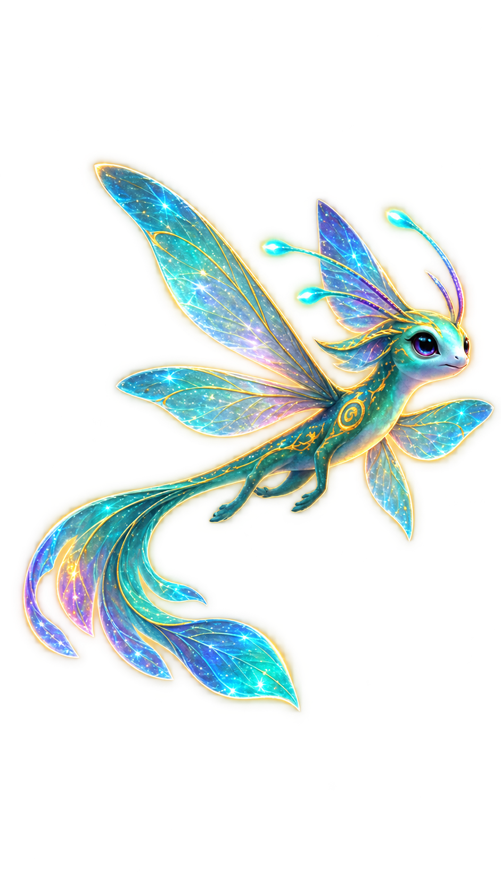
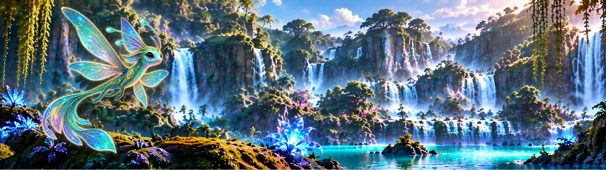
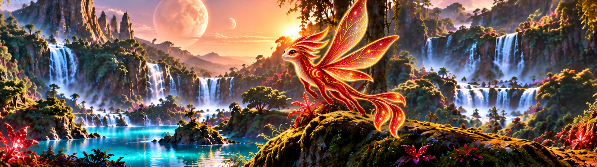
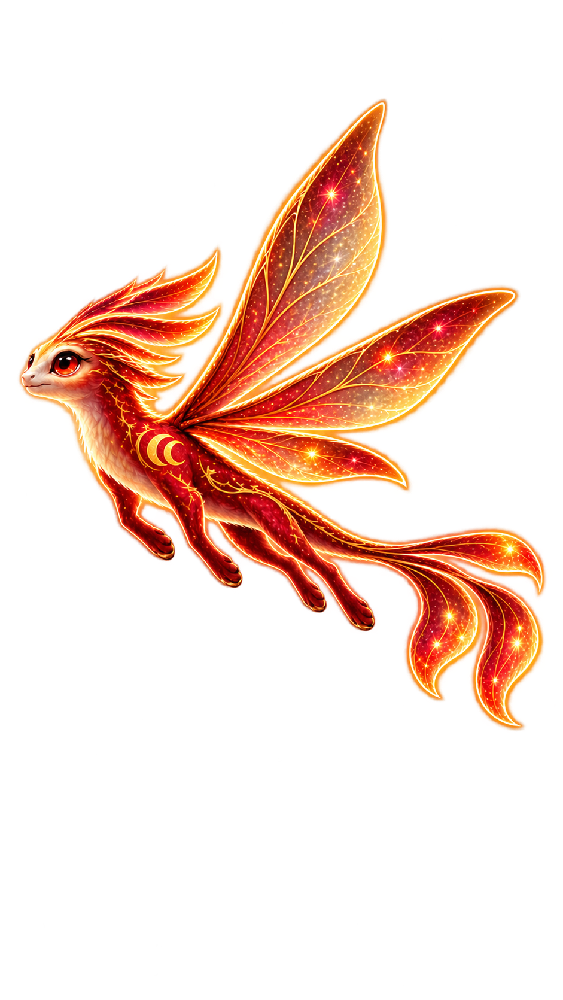

Vaelira
Aussprache: Vae-li-ra
Bedeutung in der Sprache der Aeloni:
„Das türkisfarbene Licht, das über dem Wasser tanzt.“
Vaelira leuchtet in Türkis und Violett.
Eine Begegnung mit den Aelovari
Zwei leuchtende Wesen. Eine unerwartete Begegnung auf K2-18b.

Tief in den Wäldern von K2-18b bewegt sich etwas zwischen den uralten Bäumen.
Aus der schimmernden Vegetation erscheint Vaelira.

Wenig später erscheint ein zweites Wesen — Cyravon.
Sie fliehen nicht.
Sie greifen nicht an.
Für einen Moment begegnen sich zwei geheimnisvolle Wesen in der Stille des Waldes.
Dann verschwinden die Aelovari ebenso lautlos zwischen den Bäumen, wie sie gekommen sind.
Doch etwas bleibt zurück — das Gefühl, dass ihre Geschichte gerade erst begonnen hat.
Dies war nicht ihre letzte Begegnung.
Aelovari sind leuchtende Flugwesen, die auf K2-18b heimisch sind. Sie sind klein, anmutig und nur selten zu sehen. Mit vier bis sechs Flügeln bewegen sie sich durch die fremden Wälder.
| Spezies | Aelovari |
|---|---|
| Größe | 15–30 cm |
| Anzahl Flügel | 4–6 |
| Lebensraum | K2-18b |

Aussprache: Vae-li-ra
Bedeutung in der Sprache der Aeloni:
„Das türkisfarbene Licht, das über dem Wasser tanzt.“
Vaelira leuchtet in Türkis und Violett.

Aussprache: Ky-ra-won
Bedeutung in der Sprache der Aeloni:
„Das warme Licht, das dem roten Wind folgt.“
Cyravon trägt die Farben Rubinrot, Kupfer und Gold.
Vaelira und Cyravon sind Teil der Welt, die rund um ROC-Mans Under Two Moons entstanden ist.